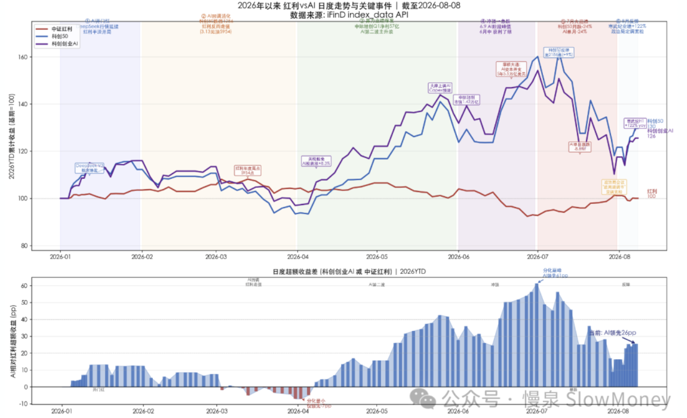
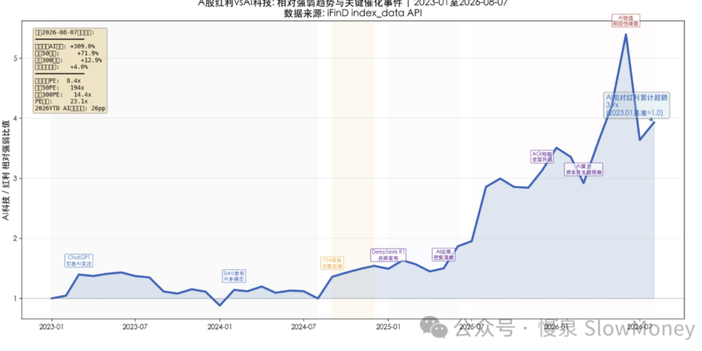
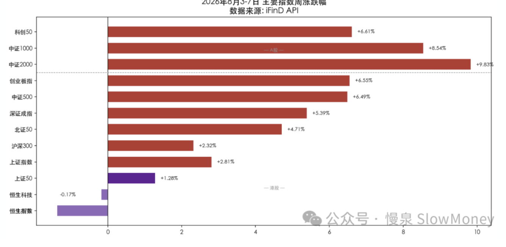

投资备忘20260809-江湖不是打打杀杀
2026-08-03 — 2026-08-09 · W32 · 周度备忘（补档）
你有多久没看到普涨或者普跌的行情了？现在市场就像两个 WWE 选手在相互爆摔。经过 7 月一个月的碳基生物暴打硅基生物之后，8 月份第一周迎来了硅基的反击。5 月份以来的双方互殴，惨烈程度可能前所未有——一般情况下看到月度指数（红利和 AI 科技）20% 以上的分化，最大可能是普跌，跌多跌少的差别，但 5、6 月份先是硅基先动手"遥遥领先"，7 月份碳基暴力反击，让市场显得不太一样。不过市场和江湖一样，不是打打杀杀，你俩都过好比啥都强。

江湖不是打打杀杀
碳基和硅基分化的底层是资金和资产配置的变化，这在 6 月 13 日周报中详细论述过——传统上的牛熊市框架：投资备忘20260614-你给翻译翻译，什么是轮动？
事实上，2021 年之后就没有传统意义上的普涨。21、22 新能源抱团，21-24 红利资产抱团，25 之后 AI 资产抱团。以本轮为例：普涨发生在 2024 年 9 月，2025 年 7、8 月，2026 年 1 月。所以 2021 年后分化的市场是主旋律，普涨是股市的注脚。
原因：产业革命、宏观低迷、新增股市资金。
碳基和硅基如何和解。像很多科技革命一样，短期硅基的通胀要么传导到碳基通胀，中长期硅基的通缩传导回碳基通缩，最终同涨同跌，硅碳和解。历史上，消费核心资产瓦解、新能源抱团接力、红利资产紧随其后、AI 革命——而其中间短的 3 个月、长的 1-2 年都有市场的普跌，而且大概率不是上一个主线。所以结论比较悲观：市场可能调整，调整后主线可能不是 AI 硬件。

市场情况
本周市场迎来了久违的反弹，指数全面收涨，小盘成长碾压大盘价值，典型指数层面沪深 300 上涨 2.3%，恒生科技下跌 0.17%，全 A 涨幅中位数 +5.3%。港股走势跟 A 股背离。本周 A 股经历"周一筑底→周二企稳→周三突破→周四整固→周五加速"的五步曲，从 7 月底的震荡中枢强势突围。全周日均成交约 2.4 万亿，较前周放量约 15%。核心驱动：风险偏好修复→科技 + 医药双主线爆发。板块间轮动节奏偏快但整体健康——周初 AI/半导体领涨、周中煤炭/贵金属接力、周五医药/CRO 全面爆发、PCB/玻纤贯穿全周。
| 指数 | 本周涨跌幅 |
|---|---|
| 中证 2000 | +9.83% |
| 中证 1000 | +8.54% |
| 科创 50 | +6.61% |
| 创业板指 | +6.55% |
| 中证 500 | +6.49% |
| 深证成指 | +5.39% |
| 北证 50 | +4.71% |
| 上证指数 | +2.81% |
| 沪深 300 | +2.32% |
| 上证 50 | +1.28% |
| 恒生科技 | -0.17% |
| 恒生指数 | -0.9% 左右（图中数值未标注） |
| 全 A 涨跌幅中位数 | +5.3% |
分析：
- 科技分化：PCB/覆铜板/玻纤全线爆发（贯穿全周主线）——AI 服务器高多层 PCB 需求爆发→向上游拉动电子布/电子纱/覆铜板需求。胜宏科技周涨 +47%、天孚通信 +35%、中国巨石 +17%、亨通光电 +25%。这是 AI 算力投资逻辑从芯片向基础材料层的纵深传导；
- 光模块放量滞涨的分化信号：中际旭创周成交 2,949 亿（全市场第 1）、新易盛 1,607 亿（第 3），但涨幅仅 +1.98%/+6.30%。巨额成交未能推动股价大幅走高，反映市场在 AI 硬件方向上分歧加剧；
- 医药从底部暴力反弹（周四周五集中爆发）：百济神州上调全年营收指引至 66-68 亿美元 + 荣昌生物 H1 扭亏赚 47 亿 + 百奥赛图净利增 6 倍→CRO/创新药/减肥药三条线共振。公募基金扎堆进入医药股东榜提供机构背书；
- 价值→成长风格全面切换：前周最强的银行（-3.70%）、食品饮料（-2.76%）全面走弱。前周最弱的大盘成长（+4.31% → 逆转 -3.28%）、小盘成长（+6.96% → 逆转 -0.20%）暴力修复。增量资金从红利/防御板块系统性撤离，流入业绩驱动的科技 + 医药；
- 贵金属在宏观 + 地缘双重驱动下创新高：ADP 疲软→加息预期降温→美元走弱 + 霍尔木兹谈判波折。COMEX 金 +7.2% 创近 5 个月最大单周涨幅，沪金 925 元/克连续刷新历史。贵金属板块（周五 +4.11%）全周保持强势。

市场展望
市场反弹到关键位置，3940-4000 之间是上一轮探底的位置，当前反弹到附近有压制指数的需求，以 2021 年的抱团调整经验看，二次探底是基准场景。
当前的市场还需要时间。当前市场的企稳的前提条件就是时间或者更大的波动，震荡的时间可能延长，这种情况下，弹性谨慎抄底、结构再次占优。绝对收益继续谨慎，相对收益对于高位资产继续谨慎，找新红利。
宏观 & 政策：7 月 PMI 全线回落，制造业 49.2% 为近半年首次落入收缩区间。但结构性亮点明确——高技术制造业 PMI 53.3% 明显高于总体，新质生产力方向维持高景气。总量走弱 + 结构分化是当前特征。
组合备忘
Beta 组合表现大幅跑输市场（市场是指 Wind 全 A 指数），Macro 同样。经过 7 月的连续跑赢后开始回调，Beta 策略本周基本微跌，Macro 策略微跌。组合仓位下降：Beta 策略仓位 75% 附近，利用周二市场波动，交易型仓位明显下降；Macro 策略仓位下降至 63%（其中转债 27%），整体保持谨慎。组合的表现主要受到以下因素影响：
- 风格本周逆风：虽然在 7 月底主动降低了红利、增加了交易型科技的持仓，但是整体风格仍然红利和硬资产为主；
- 交易型的科技资产本周表现突出：AI、创新药和半导体材料明显反弹，大部分止盈了结；
- HALO 资产表现中规中矩：机器人和港股本周承压。
| 类别 | 仓位 |
|---|---|
| Beta 策略（利用周二波动明显降低交易型仓位） | 75% |
| Macro 策略权益仓位（含转债 27%，整体保持谨慎） | 63% |
Beta 大幅跑输市场 · Macro 同样 · 周度涨幅不再公开播报
操作和思考：本周的主要操作是在科技和成长资产下跌阶段果断增加仓位，利用 5% 以上的仓位参与弹性交易，并在反弹过程中减仓，全周看成长资产基本持平；红利资产略微下降，等待新的买入窗口。
下一步：关键位置和节点上保持耐心，仓位继续下调至不高于 75%，开始考虑新的布局方向，并增加案头。
- 成长类资产：科技的第一轮弹性交易接近尾声，创新药的尝试建仓开局良好，继续寻找未来的成长资产；
- 机器人：AI 革命的最强受益硬件，特别是零部件；
- 红利：有明显回调而且动量较足，全市场来看 -10% 附近进入新建仓区间；
- HALO 资产：蠢蠢欲动，维持持仓。
上期钩子的答案：① 科技与红利分合三判断——8 月第一周给出方向：不是同时下跌，而是硅基暴力反击重新拉开分化（科创 50 +6.61%、中证 2000 +9.83%，前周最强的小盘价值/大盘价值成为最弱方向），"再次分化？"开始兑现，弥合方式暂未走向同时下跌；② 量与时间的触发——放量兑现：日均成交约 2.4 万亿、较前周放量 15%，五步曲从震荡中枢突围，但"时间"条件仍未满足；③ HALO 新资产标准落地——暂无新资产入库，机器人和港股承压，维持持仓、蠢蠢欲动；④ KOSPI 拥挤清算传染——已结束：硅基暴力反弹、AI 材料端（PCB/玻纤）接力，市场从清算转入修复。新钩子：① 3940-4000 的压制与二次探底基准场景是否兑现；② "调整后主线可能不是 AI 硬件"的验证——光模块放量滞涨已是分歧信号；③ 红利 -10% 附近新建仓区间的执行；④ 硅碳和解路径（短期通胀传导 / 中长期通缩回传、最终同涨同跌）走到哪一步。对账窗口：2026 年 8 月下旬。